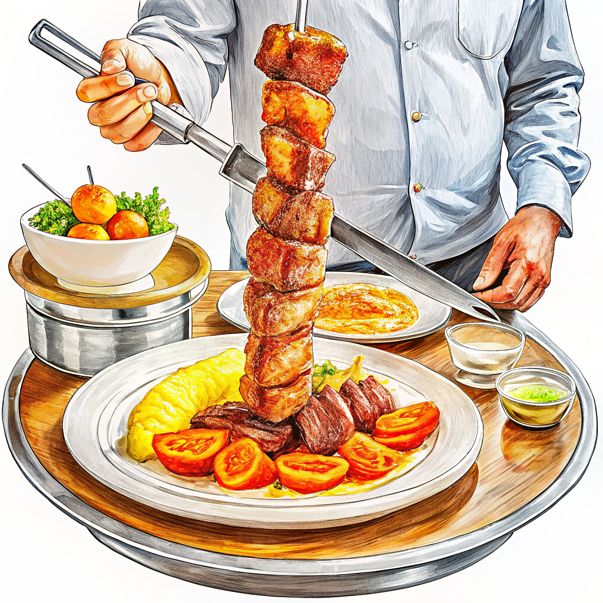

ブラジルってどんなところ？
コルコバードは「午前中」の訪問がおすすめ
コルコバードのキリスト像は午後になると雲がかかりやすく、視界が悪くなることがある。登山電車のチケットは日時指定制で人気の時間帯はすぐ埋まるため、公式サイトでの事前予約が必須。晴れた午前中なら遠くシュガーローフまで見渡せる。

イグアスの滝は「両国側」で見え方が違う
イグアス国立公園はブラジル側がパノラマで滝群全体を見渡せるのに対し、隣国アルゼンチン側は滝の上部から「悪魔の喉笛」に至近距離で接近できる。時間に余裕があれば国境を越えて両側を訪れると、ひとつの滝の異なる表情を楽しめる。

シュラスコは「肉の焼き加減」を伝えると得をする
シュラスコ専門店（シュラスカリア）では、給仕が次々と串を運んでくる食べ放題スタイルが基本。最初に好みの焼き加減（マウ・パッサード＝レア、アオ・ポント＝ミディアム等）を伝えておくと、好みの部位を優先的に切り分けてもらいやすくなる。

SPONSORED広告 728 × 90（インフィード）
言語
ポルトガル語（英語は観光地でもやや通じにくい）
⚠️
渡航危険情報
レベル1：十分注意
ファベーラ等治安不安定地区は特に警戒、観光地でも荷物管理を
外務省で確認 →
日本人に人気？世界最大級の日系人コミュニティを持つ親日国として知られる。コルコバードの絶景・カーニバルの熱狂・シュラスコやフェイジョアーダなど、日本では味わえないスケール感が旅行者を惹きつけている。
主要都市
この人形をストリートビューを見たい場所にドラッグして配置してください
↑
リオデジャネイロ観光の中心
キリスト像とコパカバーナ海岸を擁するブラジル観光の顔。山と海が織りなす景観美で知られる旧首都
サンパウロ南米最大都市
南半球最大の巨大都市。美食とアートが集まる経済の中心地で、日本人街リベルダーデも広がる
フォス・ド・イグアス世界遺産の滝
世界三大瀑布のひとつイグアスの滝への玄関口。アルゼンチン・パラグアイとの国境三角地帯に位置する
サルバドールアフロブラジル文化
ブラジル最初の首都。カラフルな旧市街ペロウリーニョにアフリカ系文化が色濃く息づく
オウロ・プレット世界遺産の鉱山都市
18世紀の金鉱で栄えたバロック建築の街。ミナス・ジェライス州の山あいに広がる世界遺産の街並み
マナウスアマゾンの玄関口
アマゾン川流域最大の都市。熱帯雨林クルーズやジャングルロッジへの拠点となる秘境の玄関口
レンソイス・マラニャンセス世界遺産の白い砂丘
純白の砂丘とエメラルドグリーンのラグーンが広がる、2024年に世界遺産登録された北東部の絶景エリア
ベストシーズン
ブラジルは南半球にあるため季節が日本と真逆で、12〜3月が真夏、6〜8月が冬にあたります。国土が広く地域差も大きいため、旅先ごとにベストシーズンを確認しましょう。
色が濃いオレンジほど気温が高いことを示しています。
☀️ 乾季 ⛅ やや曇り ☔ 雨季
リオデジャネイロ
ベスト：6〜9月の冬（乾燥して過ごしやすい）／ 12〜3月は真夏で猛暑・にわか雨も多い。
季節は日本と真逆で12〜3月が夏、6〜8月が冬にあたる。夏は30°C超の猛暑に加え湿度も高く、午後は突然のスコールが降ることも多い。冬でも20°C前後あり厚手の上着は不要だが、朝晩はやや涼しく感じられる。
サンパウロ（オウロ・プレット等ミナス高原）
ベスト：4〜9月（乾季で晴天が多い）／ 12〜3月は雨季で午後のスコールが頻発、冬は朝晩10°C近くまで冷え込む。
標高750m超の高原にあり、リオより涼しく過ごしやすい気候。12〜3月の雨季は毎日のように夕立があるが数十分で止むことが多く、6〜8月の乾季は空気が乾燥し朝晩は肌寒いため薄手の羽織りものが必須になる。
フォス・ド・イグアス
ベスト：4〜9月（乾季で滝の水量・気温とも比較的穏やか）／ 12〜3月は高温多湿で35°C近くまで上がる日も。
内陸の亜熱帯気候で、夏（12〜3月）は35°C近くまで上がり湿度も高く滝周辺は蒸し暑い。冬（6〜8月）でも日中20°C前後と過ごしやすいが、南極からの寒波が入ると急に冷え込むこともあるので上着があると安心。
サルバドール（バイーア州）
ベスト：9〜3月（乾季でビーチ日和）／ 4〜7月は雨季で降水量が多く、大西洋からの湿った風で年中蒸し暑い。
他地域と雨季・乾季が逆転するのが特徴で、4〜7月が雨季にあたる。年間を通じて気温差が小さく常夏の気候だが、湿度が高いため体感的には数字以上に蒸し暑く感じやすいので、通気性の良い服装で過ごすのがおすすめ。
レンソイス・マラニャンセス
ベスト：6〜9月（雨季で溜まった水がラグーンとして残る絶景シーズン）／ 10月以降は乾季で干上がり、1〜5月は雨季で増水しすぎて回れないことも。
赤道に近い北東部の熱帯気候で、年間を通じ気温差は小さく常に暑い。1〜6月の雨季に溜まった雨水が6〜9月にラグーンとして残るが、10月以降は蒸発して真っ白な砂漠だけになるため、訪問時期の見極めがとても重要になる。
航空券が安い時期南半球の夏休みにあたる12〜2月とカーニバル前後（2〜3月）は航空券・宿泊費とも高騰しやすい。狙い目は冬にあたる6〜8月で、リオも過ごしやすく価格も落ち着く。
基本データ
緑地に黄色いひし形、中央の青い天球に27の星（州と連邦区）とポルトガル語で「秩序と進歩」の標語が描かれる。
首都
ブラジリア
1960年に荒野から計画都市として建設された新首都。近代建築群は世界遺産に登録
独立年
1822年
ポルトガル王太子ペドロが「独立か死か」と宣言し、戦争を経ずに独立を果たした
人口
約2億1,600万人
南米最大、世界第5位の人口大国
面積
約851万km²
日本の約22.5倍。南米大陸の約半分を占める世界第5位の広さ
宗教
カトリックが約5割
近年は福音派プロテスタントが急増しており、宗教構成が大きく変化しつつある
民族
混血・多民族国家
ポルトガル系・アフリカ系・先住民系に加え、世界最大級の日系人コミュニティも存在する
言語
ポルトガル語（英語は観光地でもやや通じにくい）
南米で唯一の公用語がポルトガル語の国。スペイン語圏の隣国とは会話が通じにくいことも多い
SPONSORED広告 728 × 90（インフィード）
観光スポットをチェックしよう！
人気の観光地から穴場まで、実際に行って良かった場所を厳選してまとめました。